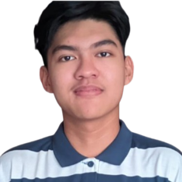

Hello, I’m
Reyzan Muhammad Hafizh
UI/UX Designer
|
Front-End Developer
UI/UX Designer dengan pengalaman sebagai Front-End Developer. Terampil merancang dan mengimplementasikan antarmuka digital yang estetis, intuitif, dan berorientasi pada pengalaman pengguna.

Skills
Design & Research
Figma
Canva
User Research
Wireframing
Prototyping
Development Support
HTML
CSS / Tailwind
Basic JavaScript
Laravel
GitHub
Soft Skills
Empathy
Problem Solving
Team Collaboration
Adaptability
Work Experience
Front End Developer Intern
SMARTIN TEKNOLOGI SISTEM July 2024 - December 2024- Membuat prototype website E-Commerce menggunakan Figma
- Mengembangkan website E-Commerce menggunakan Laravel
- Berkontribusi pada pengembangan front-end untuk antarmuka dan pengalaman pengguna, sambil mendukung beberapa tugas back-end.

Education History
SMK Negeri 2 Jakarta
Rekayasa Perangkat Lunak 2022 - 2025- Pernah aktif di ekskul INATEC dan Basket
- Magang sebagai Front-End Developer di SMARTIN TEKNOLOGI SISTEM
- Mendapatkan sertifikat LSP dari sekolah
Startup Campus x YCAB Foundation
Youth Employment Program – Bootcamp UI/UX Design July 2025 - October 2025- Mendalami proses Design Thinking dari riset pengguna hingga pembuatan prototipe interaktif.
- Menghasilkan wireframe, user flow, dan high-fidelity prototype menggunakan Figma dengan pendekatan berfokus pada pengalaman pengguna.
- Berkolaborasi dalam tim lintas disiplin untuk mengerjakan proyek berbasis studi kasus nyata.
- Bersama tim, meraih Juara 2 (Runner Up 1) dalam showcase program YEP dengan aplikasi pencari komunitas Finity, menampilkan penerapan UI/UX Design secara nyata.
- Memperoleh sertifikat kelulusan sebagai bukti kompetensi di bidang UI/UX Design.